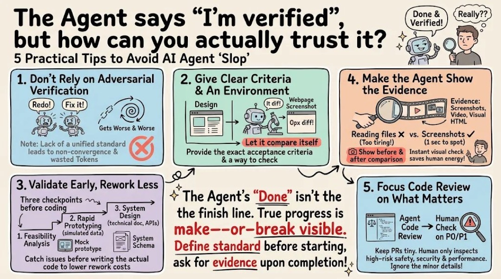
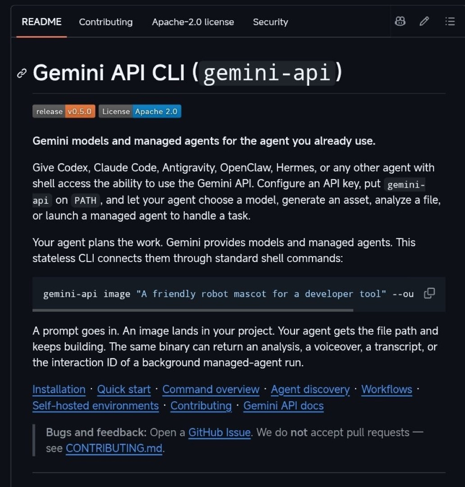
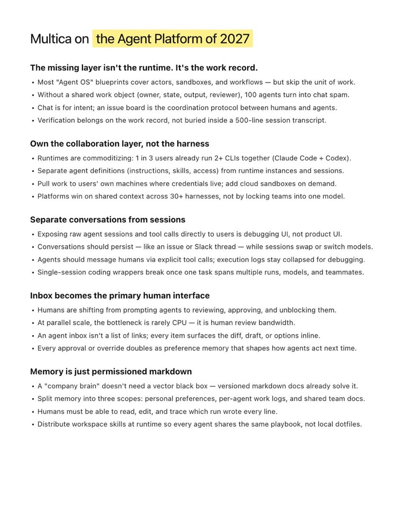
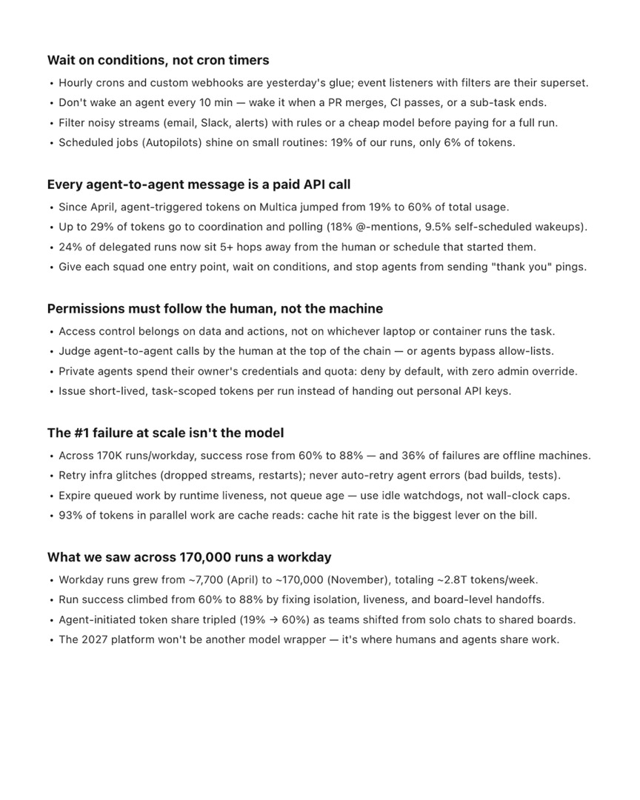
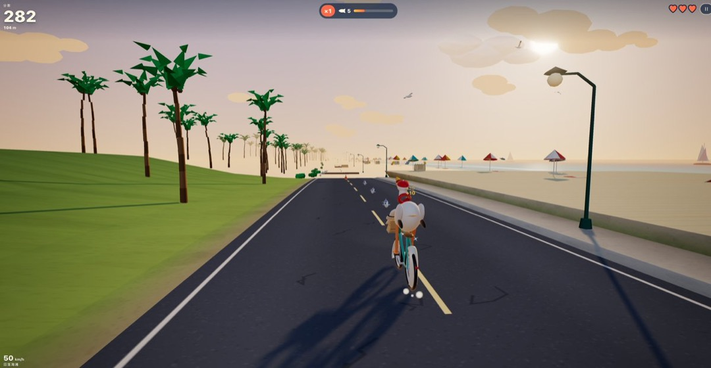
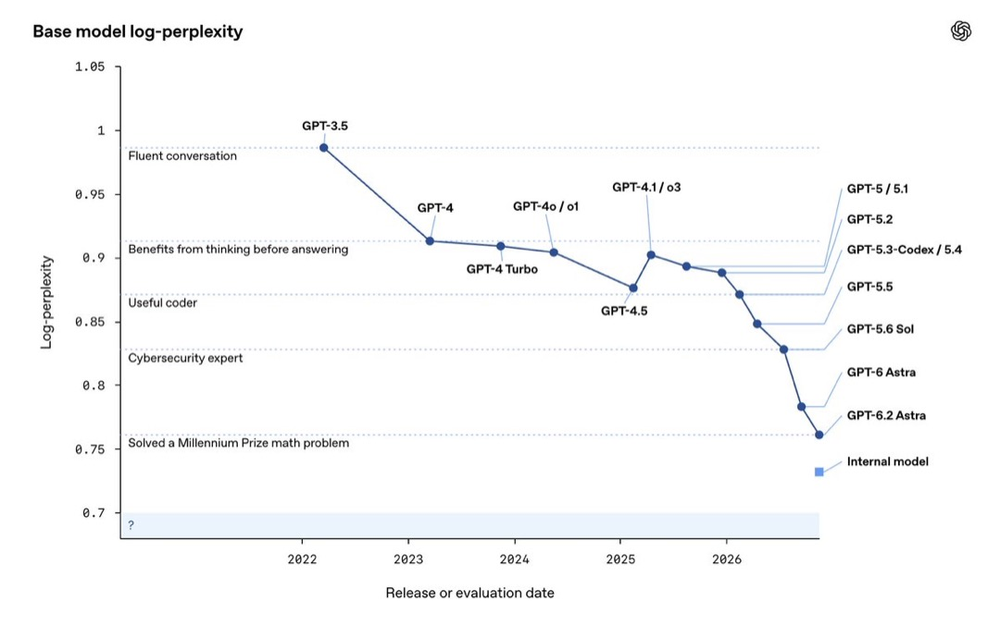

本期速览
01 Agent验证五法：让结果可验收
05 特斯拉FSD用1B模型实时生成画面
08 T3 Code官方通道统一多Agent
09 Multica 总结Agent平台十经验
11 GLM 5.4实测长程任务仍偏弱
12 OpenAI用困惑度验证压缩即智能
01｜Agent验证五法：让结果可验收
来源（X） · @dotey · 2026-11-23 04:37
很多朋友都被 Agent 坑过：它信誓旦旦说做好了、验证完了，你信以为真，上线后发现压根没做好。被老板骂完回头找它，它认错态度很好，下次还是一样。
问题出在我们让它验证的方式上：Agent 不知道什么叫“做好了”，你也没有低成本的办法确认它真的做好了。分享五条我在用 Agent 做验证时的经验。
一、不要依赖对抗式验证
对抗式验证就是让另一个甚至多个 Agent 来检查结果，执行的 Agent 根据反馈改进，再检查、再改进，直到完成为止。
听起来很好，实际上经常无法收敛。尤其是不太聪明的模型，大部分时候是越改越糟，还浪费了很多 Token。
原因是缺少统一的验收标准。负责检查的 Agent 并不一定知道完整的上下文，也不知道准确的验收标准，于是自作主张提一堆意见，执行的 Agent 再照单全收，结果就越改越偏。
二、给出清晰的验收标准，再给一个能验收的环境
举个例子，你把设计稿交给 Agent，说：“帮我把这几个设计稿做成页面”，通常它会给你一个差不多的结果，有时候出入还很大。
换一个说法：“帮我把这几个设计稿做成页面，完成后请对网页截图，对比设计稿，要求像素一个都不要差”。这时候 Agent 做完不会轻易交差，它会截图，写工具对比截图和设计稿的像素差异，返工重做，直到像素真的一个都不差。
大部分时候我们并不需要一个像素都不差，有些偏差可以接受。重点是让它知道验收标准是什么，并且手里有办法自己去验。
三、越早验证，返工成本越低
尽早验证在传统软件工程里是常识，是大量血泪教训换来的。只是现在 Vibe Coding 让生成代码的成本大幅降低，非专业人士越来越多，大家渐渐忘了写代码之前还有三道关：
可行性分析：这个项目真的值得做吗？做出来会有人用吗？投入产出比合算吗？
原型开发：先做基本的交互，用模拟数据低成本做出一个可运行的原型，快速验证方向对不对，不对马上调整。现在 Agent 做原型已经很强了，比如 Claude Design（或者本地版的 https://github.com/jimliu/open-artifact），做出来的东西和最终结果看起来没什么差别，成本低得多，速度也快。
系统设计：技术选型、模块划分、数据结构、数据库设计、API Schema 这些。设计没做好，系统也能跑，但将来维护成本要高不少。Agent 能力虽然强，选的技术方案并不总是最好的。动手实现之前，先让它写一份技术方案文档，你大概看看：一方面帮你理解项目是怎么实现的，另一方面能及时纠正潜在问题，避免做完再返工。
四、让 Agent 提供证据，降低你的验收成本
人在 Loop 里是必不可少的，完全交给 AI，大概率只能收获 AI Slop。但人的验收能力是瓶颈，要确认的东西太多会很累。我最近用 Antigravity，跨 Workspace 每读一个文件都要我手工确认一遍，简直快崩溃了。
所以要把人确认的成本降到最低：能快速判断结果对不对，快速指出哪里有问题。
最简单的方式，是让 Agent 提供截图、录屏、可视化的 HTML 报告。Agent 在截图过程中自己也能发现一些问题，但截图最大的价值，是让人一眼就能看出问题。
想象一下，你是老板，员工来汇报工作，一页密密麻麻的 Word 文档和三页漂亮的 PPT，哪个更容易看？
我现在最常用的几个做法：
- 开发新功能，让它提供新功能的截图
- 修 bug，让它提供修改前和修改后的截图对比
- 让它自己模拟 API 响应数据，动态生成各种不同场景的截图，完全不需要服务端配合（虽然我还没搞明白它是怎么模拟的）
五、代码审查聚焦于真正的问题
Agent 生成代码的速度太快，瓶颈已经转移到了代码审查和验证上。代码审查不太可能完全靠人来做了，但人参与仍然有意义，只是方式要调整：
- PR 尽可能小。这样 Agent 审起来准确率更高，人也看得过来。
- 让 Agent 审，但不全信它的结论。审查结果要分级，人只盯 P0、P1 级别的问题，尤其是安全和性能问题，人工甄别一下，必要时让 Agent 解读、在本地验证。
- 细枝末节放过去。代码规范、最佳实践这类问题，不用太在意。
最后
这五条说的是同一件事：Agent 说的“做好了”不能直接当结论用，得让它变成你能检查的东西。
- 动手之前，告诉它什么叫做好了
- 动手之前，先用原型和方案文档把方向验一遍
- 做完之后，让它拿截图和对比来证明
- 你自己的精力，只花在最要紧的问题上

02｜gemini-api-cli终端多模态
来源（X） · @HeLi8866 · 2026-11-23 23:05
谷歌推出了一个终端神级工具：gemini-api-cli。
不用写一堆繁琐的 SDK 代码，直接敲命令，就能把 Gemini 的视频理解、OCR 和音视频生成能力全部白嫖光！
这玩意儿极其狂暴⬇️：
・视听生图全家桶：敲 image 瞬间出图，tts 秒出播音级配音，连视频、音乐都能直接原地生成落盘！
・视频与 OCR 降维打击：扔进去几百页烂 PDF、一段长录屏甚至 YouTube 链接，敲 analyze 一秒吸干所有核心信息！
・给 Agent 当最强挂件：Claude Code、Codex 缺素材？不用写一行废话，直接调它当免费全能军火库！
・纯 Go 打造零折腾：单二进制文件，不搞恶心的 Python 环境冲突，Win/Mac 一行直接跑！
还在手动搬砖搞多模态的，这波生产力直接甩开银河系。做项目和玩 Agent 的赶紧码住！
开源地址：
https://github.com/google-gemini/gemini-api-cli

03｜DSH Agent Loop 架构可视化
来源（X） · @antiAIvo · 2026-11-22 15:45
用Gemini4 Neon做了一个Html方便理解
想要总共7期的文章内容在一个页面能直观展示出来
也是需要一些打磨的，中间生成了多种样式
这是最终版，我觉得还算满意。

引用内容
纳米AI @antiAIvo
沿着“用户敲下回车 → 模型返回结果”这条真实数据流
逐函数把 DSH 的 Agent 主循环走了一遍
7 个核心函数，每一个都在回答同一个问题：
在并发、异步、随时可能中断的真实环境里
怎么保证状态永远一致？
这其实也是目前agent-harness要解决的问题
直接看总结其实是比较难懂的
想要理清楚还是得深入代码，因为都是工程实践
一个完整的 Loop 长这样（附图是详细流程）：
followup → send → wakeDriver → kick
└→ while(turn)
└→ preStep (认领·装配·拦截)
└→ step (推理·拼块·工具)
└→ 收尾 (结局·续命·闭环)
└→ idle / 接力重启
从 EP.01 到 EP.07，这7篇都在我发的文章里
每一篇都是沿着真实数据流逐函数拆解的源码笔记
如果你也在读 Agent 框架的源码
希望这条路线能帮你省点时间🙂

04｜Tailscale IPv6组网实测无坑
来源（X） · @zihua0 · 2026-11-23 02:18
推文发出来后，有很多大佬评论说，IPv6 有很多坑、运营商会限速、IP 地址不稳定等等问题。
实际体验了两周下来，我可以负责任回答，只要配置得当，以上问题都没有，下图是我的完整方案，自取！

05｜特斯拉FSD用1B模型实时生成画面
来源（X） · @DashHuang · 2026-11-23 07:40
想象一下，未来的 GTA 都能用这种方式玩，还要什么 3D 引擎。
传统的古法 3D 游戏制作流程，已经进入了历史的垃圾时间……

引用内容
Elon Musk @elonmusk
中文译文
如果有人好奇的话：
从去年开始我们就有了一个接近像素级还原的世界模型，这对于合成数据生成至关重要。
车上的那个（小得多的）版本是一个条件均值流模型，基于最近一系列 Tesla 通用视觉编码器（UVE）特征，这些特征与输入到 3B 编码器模型中生成驾驶动作的特征是相同的。
我们从这些 UVE 特征分叉出来，然后运行一个独立的约 1B 的扩散模型。它接收带噪声的上一帧真实视角生成结果，然后对其进行去噪，得到当前的可视化输出。
接着它会生成一小段视频片段（36 fps 下的 8 张图像，分辨率与 UI 屏幕相同）。这项工作由半个 TRIP 引擎在每个 18 Hz 的 UVE 帧上完成，并分布在 4 个周期中。
目前，由于算力限制，延迟有点高，但我们有办法将更新的 UVE 特征与扩散 Transformer 层交错排列，从而将延迟减少大约 35%。
原文
In case anyone is curious:
We’ve had a ~pixel-perfect world model since last year, which is critical for synthetic data generation.
The (much) smaller version of that in the car is a conditional mean-flow model, based on the recent sequence of Tesla Universal Vision Encoder features, which are the same ones that are plugged into the 3B encoder model that produces the driving actions.
We fork off from these UVE features, then run a separate ~1B diffusion model. This takes in the previous reality-view generation with added noise and then denoises it to the current visualization.
It then produces a small video chunk (8 images at 36 fps, at the resolution of the UI screen). This work is done by 1/2 of a TRIP engine every UVE frame at 18 hz and is spread over 4 cycles.
Currently, the latency is a bit high due to compute constraints, but we have ways to interleave newer UVE features along the diffusion transformer layers to cut roughly 35% of the latency.
06｜四模型生成PPT质量实测对比
来源（X） · @fankaishuoai · 2026-11-22 23:55
我为周二在香港科技园的分享准备PPTX，同一份演讲内容，分别让他们帮我生成PPTX：
1. Gemini 4 Neon：非常美观，但少数设计有瑕疵
2. Claude Opus 5.5：美观，结构设计非常棒
3. GPT-6.2 Sol：中规中矩，不美观，但能用
4. DeepSeek V4.1 Flash：很多缺陷，没法用。
我最后采用了 Opus 5.5 生成的版本。仅仅因为我不想再修改PPTX了。但 Gemini 生成的版本真的最漂亮。
不过Gemini生成过程折腾死我了，通过Paseo ACP调用直接没响应，直接使用AGY CLI，弹了n次授权，我快疯掉了。
Google赶紧的吧，让其他Agent接入Gemini订阅套餐。
最后还是有点忧虑的，现在御三家（Claude，GPT，Gemini）明显把国内模型甩开了。希望 DeepSeek能跟上来吧。
图片我截取了一页三个模型生成的Slide，可以对比看看效果：
07｜Antigravity核心团队分工
来源（X） · @Tao100086 · 2026-11-23 15:23
核心开发者 / 产品工程负责人：
Varun Mohan（@_mohansolo）
Varun 是 co-lead（前 Windsurf CEO，2025年被 Google 招入 DeepMind），主导产品方向和工程。
Kevin Hou（@kevinhou22）
Kevin 是 head of product engineering（也来自 Windsurf），负责产品工程落地，经常做技术演讲和访谈。两人是最核心的公开开发/产品面孔。
Reset guy（配额重置宣布者）：
Varun Mohan（@_mohansolo）
几乎所有全员 quota reset 都由他在 X 上宣布。社区甚至有专门追踪他发帖的站点（如 http://antigravityreset.com、http://agyresets.com）。最近一次是 2026年11月21日左右的 Gemini 配额重置。Kevin 有时会 echo，但主宣布人是 Varun。
收集建议 / Feedback guy
Rody Davis（@rodydavis）
Staff DevRel，专门负责开发者成功和社区。会在 X 上主动问“你最想要的缺失功能是什么”，收集大量回复后总结给团队，并引导大家去官方论坛提交反馈。也做 demo、workshop 和内容。
官方宣传 / DevRel
Rody Davis（@rodydavis）、Nohe（@NoheDev）、Kevin Hou（@kevinhou22）、Google for Developers 账号（@googledevs）
Rody 和 Nohe 做 live demo、SDK 展示、技术内容。Kevin 做高层演讲和产品宣传。还有 Google Cloud 的 Developer Advocate（如 Guillaume Laforge、Mete Atamel）也有做相关分享。
还有一个Rody Davis（@rodydavis）和Varun Mohan（@_mohansolo）貌似也在关注社区违规使用事件，到处回复违反toc....
总而言之，如果大家准备重度使用Antigravity的话，这几个人的X还是需要关注一下的。
08｜T3 Code官方通道统一多Agent
来源（X） · @harrisonitsme · 2026-11-22 18:17
Gemini 4 好评如潮，订阅却被锁死在难用的 Antigravity 里。大家用反代绕过去，结果 magpie 这类项目第二天就被整批封号。
后来 Google 在官方论坛明确表态：只要运行官方原版 antigravity-acp、走它自带的登录，用于个人交互式开发，就是合规的。T3 Code 正是这么做的。
总结了下T3 的优势：
1、合法：别人走反代赌封号，它走官方通道，不用赌
2、不转卖 token：不额外收费，直接用你已有的 Claude / Codex / ChatGPT / Gemini 订阅
3、一个界面管所有 agent：Claude Code、Codex、Cursor、OpenCode、Antigravity 等全支持，对话中途还能切模型，让 Claude 把任务交接给 Codex
4、多端同步：桌面、网页、手机共享同一批 thread，手机上就能批准命令，人不在电脑前 agent 也能继续干活
5、内建 Git：每条 thread 独立 worktree，看 diff、commit、push、开 PR 一键完成
6、扩展快：基于 ACP 架构，新 agent 写个 adapter 就能接入，Gemini 4 一发布就跟上了
7、MIT 开源：约 7 万 star，代码和会话都在本地
适合：手上有多个 agent 订阅、想统一调度、需要用手机远程推进任务的人。
09｜Multica 总结Agent平台十经验
来源（X） · @hungryturbo · 2026-11-23 20:38
1、缺失的一层并非是运行时，而是工作记录。
- 大多数智能体操作系统蓝图都涵盖了执行者、沙箱和工作流，却忽略了工作单元。
- 没有共享的工作对象（负责人、状态、产出、审核人），100 个智能体只会变成满屏的垃圾聊天消息。
- 聊天用于表达意图，任务看板才是人类与智能体之间的协作协议。
- 验收记录应当留在工作记录上，而不是淹没在长达 500 行的会话日志中。
2、掌控协作层，而非底层执行框架。
- 运行时正在同质化，三分之一的用户已经同时混用 2 个以上的命令行工具（Claude Code + Codex）。
- 将智能体定义（指令、技能、访问权限）与运行时实例及会话解耦。
- 将工作拉取到存有凭证的用户本地机器上执行，按需补充云端沙箱。
- 平台靠跨越 30 多种 Harness 共享上下文取胜，而不是把团队锁定在单一模型上。
3、将对话与会话分离。
- 直接把智能体的原始会话和工具调用暴露给用户，做出来的是调试界面，而不是产品界面。
- 对话应当持久留存，就像 Issue 或 Slack 消息串一样，而底层会话则可以随时轮换或切换模型。
- 智能体应当通过显式的工具调用向人类发送消息，执行日志则保持折叠，仅供调试查看。
- 一旦单个任务跨越多次运行、多个模型和多名团队成员，基于单次会话的编程套壳工具就会失效。
4、收件箱成为主要的人机交互界面。
- 人类的角色正从向智能体写提示词，转向审查、批准并为它们扫清阻塞。
- 在大规模并行下，瓶颈很少在于 CPU，而在于人类的审查带宽。
- 智能体收件箱不是一串链接列表，每一项都会直接在界面内联展示代码差异、草稿或可选项。
- 每一次批准或人工改写都会同时沉淀为偏好记忆，塑造智能体下一次的行事方式。
5、记忆本质上就是带权限控制的 Markdown。
- 企业大脑不需要向量数据库黑盒，带版本控制的 Markdown 文档就已经能解决问题。
- 将记忆拆分为三个作用域：个人偏好、单智能体工作日志，以及团队共享文档。
- 人类必须能够阅读、编辑这些内容，并追溯每一行是由哪一次运行写入的。
- 在运行时分发工作区 Skills，让每个智能体共享同一套操作手册，而不是依赖本地隐藏配置文件。
6、等待条件触发，而非依赖 Cron 定时任务。
- 按小时执行的 Cron 定时任务，和自定义 Webhook 是旧时代的胶水方案，带过滤器的事件监听器才是它们的超集。
- 不要每 10 分钟唤醒一次智能体，而应在 PR 合并、CI 通过或子任务结束时唤醒它。
- 在为一次完整运行付费之前，先用规则或廉价模型过滤嘈杂的信息流（邮件、Slack、告警）。
- 定时任务在小型日常例行工作上表现出色：占我们运行总次数的 19%，却仅消耗 6% 的 Token。
7、智能体之间的每一条消息，都是一次付费 API 调用。
- 自 4 月以来，Multica 上由智能体触发的 Token 占比，已从总用量的 19% 跃升至 60%。
- 高达 29% 的 Token 消耗在协调与轮询上（18% 为 @提及，9.5% 为自主调度的唤醒）。
- 目前 24% 的委派运行距离，最初发起它们的人类或定时计划已相隔 5 跳以上。
- 为每个小队设置单一入口，基于条件等待，并禁止智能体发送谢谢之类的无意义提示消息。
8、权限必须跟随人类，而非机器。
- 访问控制应当绑定在数据和操作上，而不是绑定在运行任务的某台笔记本电脑或容器上。
- 应根据调用链顶端的人类身份，来判定智能体之间的调用权限，否则智能体就能绕过白名单。
- 私有智能体消耗的是其所有者的凭证与配额，默认拒绝访问，且不允许任何管理员越权覆盖。
- 为每次运行签发短生命周期、限定任务范围的令牌，而不是直接分发个人 API 密钥。
9、大规模运行下的头号故障原因并非模型本身。
- 在每个工作日 17 万次运行的规模下，成功率从 60% 提升到了 88%，而 36% 的失败源于机器离线。
- 只对基础设施故障（流中断、重启）进行重试，切勿自动重试智能体自身的错误（构建失败、测试不过）。
- 根据运行时存活性，而非排队时长来使队列任务过期，使用空闲看门狗，而不是绝对时间上限。
- 并行工作中 93% 的 Token 都是缓存读取，缓存命中率是控制账单成本的最大杠杆。
10、我们在每个工作日 170000 次运行中看到的现象
- 工作日运行次数从约 7700 次（4 月）增长至约 170000 次（11 月），每周总计消耗约 2.8 万亿（2.8T）Token。
- 通过修复环境隔离、存活性检测以及看板级任务交接问题，运行成功率从 60% 攀升至 88%。
- 随着团队从单人聊天转向共享看板，由智能体发起的 Token 占比增至原来的三倍（19% → 60%）。
- 2027 年的平台不会是又一个模型套壳工具，而是人类与智能体共同分担工作的地方。
引用内容
Jiayuan (JY) Zhang @jiayuan_jy
中文译文
每个人都在谈论 2027 年的 Agent 平台。
这是 @MulticaAI 每个工作日 17 万次 agent 运行教给我们的东西：
原文
Everyone is talking about the Agent Platform of 2027.
Here's what 170,000 agent runs a workday taught us at @MulticaAI :


10｜Docker跑微信接Hermes机器人
来源（X） · @weichen_ink · 2026-11-23 18:19
原本我以为是脱裤子放屁
结果是真的有需求啊！！！！
我就一直想有个自动发提醒的机器人到群里
各种方案都不行，直到我看到这个项目
Docker 跑微信，浏览器直接打开
Hermes 就可以无缝操作了
非常丝滑哈哈哈哈哈哈
项目：https://github.com/nickrunning/wechat-selkies
11｜GLM 5.4实测长程任务仍偏弱
来源（X） · @riba2534 · 2026-11-23 20:25
1. 国模第一梯队，质量很明显比 glm5.3/deepseek-flash-1017 强太多了，但还是离 sota 仍旧非常遥远，国模还需努力。
2. 依旧祖传超级雷霆大思考，很容易陷入死胡同，长程任务能力不足，需要人主动拉回来，O55 干一个小时的东西，这个干三四个小时，都不一定能找到正确的路。
3. 卡，服务端资源实在是太卡了，下午测试没有正常的资源足够完成任何一个任务。永远是 API Error: 529 [1305][该模型当前访问量过大，请您稍后再试]。
鹈鹕测试：https://glm54-pelican-bike-3d.riba2534.cn/

引用内容
Z.ai @Zai_org
中文译文
介绍 GLM-5.4：我们的首个循环 Transformer 实现的通用编码。
- 对 GLM-5 基础模型中已有的层进行循环，以实现更深层推理
- 超越传统编码，扩展到视频、游戏、3D 着色器和 CAD 建模
- 增加视觉能力，实现更强的视觉编码
API 访问将在安全评估后开放。模型权重将负责任地发布。
技术博客：http://z.ai/blog/glm-5.4
原文
Introducing GLM-5.4: Generalized Coding with Our First Loop Transformer.
- Loops existing layers in the GLM-5 base model for deeper reasoning
- Pushes beyond traditional coding to video, games, 3D shaders, and CAD modeling
- Adds vision capabilities for stronger visual coding
API access will open after safety evaluation. Model weights will be released responsibly.
Tech Blog: http://z.ai/blog/glm-5.4
12｜OpenAI用困惑度验证压缩即智能
来源（X） · @bojie_li · 2026-11-23 11:08
这是学界非常知名的 “压缩即智能” 理论。OpenAI 发布的数据表明，预训练模型的智能程度与其 Perplexity（困惑度）高度相关，Perplexity 越低，它预测文本下一个 token 的准确率也就越高，压缩率也就越高。
我在 2024 年有个错误的判断，感觉 log perplexity 到 0.9 以下就很难继续降低了，剩下的部分是世界的随机性，很难预测。这也是业界很多人认为 pretraining scaling 撞墙了的时候。
没想到 T 级参数量的模型可以把 log perplexity 推得更低，并且这些模型有更多的 emergent behavior：安全专家、前端专家、解决千禧年难题。pretraining scaling 还远远没有到头。
引用内容
Jakub Pachocki @merettm
中文译文
我们决定在 OpenAI 提供更多关于预训练进展的透明度，以便朝着共享安全标准迈进。在《困惑度与智能》一文中，我主张基于困惑度及其他指标设定共同的界限，超出这些界限的进展将取决于我们理解 AI 行为的能力。
https://openai.com/index/perplexity-and-intelligence
原文
We decided to provide more transparency into pretraining progress at OpenAI for the sake of moving toward shared safety bars. In “Perplexity and Intelligence” I argue for common limits based on perplexity and other measurements, with progress beyond them gated on our ability to understand AI behavior.
https://openai.com/index/perplexity-and-intelligence
